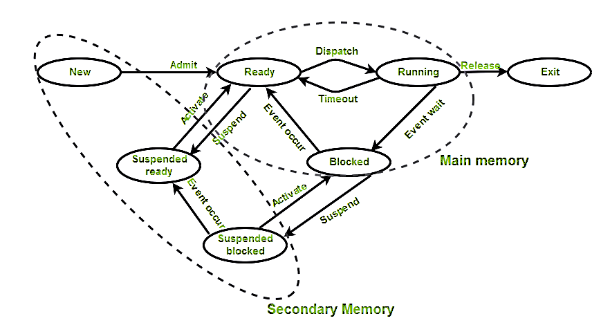
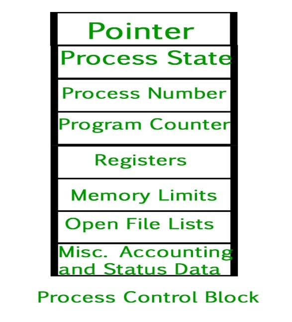

Unit 1. Introduction
1.1 Operating System and its Functions
Operating System lies in the category of system software. It basically
manages all the resources of the computer. An operating system acts as an interface between the
software and different parts of the computer or the computer hardware. The operating system is
designed in such a way that it can manage the overall resources and operations of the computer.
Operating System is a fully integrated set of specialized programs that handle all the operations of the computer. It controls and monitors the execution of all other programs that reside in the computer, which also includes application programs and other system software of the computer. Examples of Operating Systems are Windows, Linux, Mac OS, etc.
Operating System is a fully integrated set of specialized programs that handle all the operations of the computer. It controls and monitors the execution of all other programs that reside in the computer, which also includes application programs and other system software of the computer. Examples of Operating Systems are Windows, Linux, Mac OS, etc.
Functions of the Operating System
- Resource Management: The operating system manages and allocates memory, CPU time, and other hardware resources among the various programs and processes running on the computer.
- Process Management: The operating system is responsible for starting, stopping, and managing processes and programs. It also controls the scheduling of processes and allocates resources to them.
- Memory Management: The operating system manages the computer'’'s primary memory and provides mechanisms for optimizing memory usage.
- Security: The operating system provides a secure environment for the user, applications, and data by implementing security policies and mechanisms such as access controls and encryption.
- Job Accounting: It keeps track of time and resources used by various jobs or users.
- File Management: The operating system is responsible for organizing and managing the file system, including the creation, deletion, and manipulation of files and directories.
- Device Management: The operating system manages input/output devices such as printers, keyboards, mice, and displays. It provides the necessary drivers and interfaces to enable communication between the devices and the computer.
- Networking: The operating system provides networking capabilities such as establishing and managing network connections, handling network protocols, and sharing resources such as printers and files over a network.
- User Interface: The operating system provides a user interface that enables users to interact with the computer system. This can be a Graphical User Interface (GUI), a Command-Line Interface (CLI), or a combination of both.
- Backup and Recovery: The operating system provides mechanisms for backing up data and recovering it in case of system failures, errors, or disasters.
1.3 Types of Operating System
- Batch Operating System: A Batch Operating System is a type of operating system that does not interact with the computer directly. There is an operator who takes similar jobs having the same requirements and groups them into batches.
- Time-sharing Operating System: Time-sharing Operating System is a type of operating system that allows many users to share computer resources (maximum utilization of the resources).
- Distributed Operating System: Distributed Operating System is a type of operating system that manages a group of different computers and makes appear to be a single computer. These operating systems are designed to operate on a network of computers. They allow multiple users to access shared resources and communicate with each other over the network. Examples include Microsoft Windows Server and various distributions of Linux designed for servers.
- Network Operating System: Network Operating System is a type of operating system that runs on a server and provides the capability to manage data, users, groups, security, applications, and other networking functions.
- Real-time Operating System: Real-time Operating System is a type of operating system that serves a real-time system and the time interval required to process and respond to inputs is very small. These operating systems are designed to respond to events in real time. They are used in applications that require quick and deterministic responses, such as embedded systems, industrial control systems, and robotics.
- Multiprocessing Operating System: Multiprocessor Operating Systems are used in operating systems to boost the performance of multiple CPUs within a single computer system. Multiple CPUs are linked together so that a job can be divided and executed more quickly.
- Single-User Operating Systems: Single-User Operating Systems are designed to support a single user at a time. Examples include Microsoft Windows for personal computers and Apple macOS.
- Multi-User Operating Systems: Multi-User Operating Systems are designed to support multiple users simultaneously. Examples include Linux and Unix.
- Embedded Operating Systems: Embedded Operating Systems are designed to run on devices with limited resources, such as smartphones, wearable devices, and household appliances. Examples include Google's Android and Apple's iOS.
1.4 Components of Operating System
An Operating system is an interface between users and the hardware of a
computer system. It is a system software that is viewed as an organized collection of software
consisting of procedures and functions, providing an environment for the execution of programs.
The operating system manages resources of system software and computer hardware resources. It
allows computing resources to be used in an efficient way. Programs interact with computer
hardware with the help of operating system. A user can interact with the operating system by
making system calls or using OS commands.
Important Components of the Operating System
- Process management
- Files management
- Command Interpreter
- System calls
- Signals
- Network management
- Security management
- I/O device management
- Secondary storage management
- Main memory management
# Process Management: The process management
component is a procedure for managing many processes running simultaneously on the operating
system. Every running software application program has one or more processes associated with
them.
# File Management: A file is a set of related
information defined by its creator. It commonly represents programs (both source and object
forms) and data. Data files can be alphabetic, numeric, or alphanumeric.
# Network Management: Network management is the
process of administering and managing computer networks. It includes performance management,
provisioning of networks, fault analysis, and maintaining the quality of service.
# Main Memory management: Main memory is a large
array of storage or bytes, which has an address. The memory management process is conducted by
using a sequence of reads or writes of specific memory addresses.
# Secondary-Storage Management: The most important
task of a computer system is to execute programs. These programs help you to access the data
from the main memory during execution. This memory of the computer is very small to store all
data and programs permanently. The computer system offers secondary storage to back up the main
memory.
# I/O Device Management: One of the important use
of an operating system that helps to hide the variations of specific hardware devices from the
user.
# Security Management: The various processes in an
operating system need to be secured from other activities. Therefore, various mechanisms can
ensure those processes that want to operate files, memory CPU, and other hardware resources
should have proper authorization from the operating system.
1.5 Operating System Services
Operating system is a software that acts as an intermediary between the
user and computer hardware. It is a program with the help of which we are able to run various
applications. It is the one program that is running all the time. Every computer must have an
operating system to smoothly execute other programs. The OS coordinates the use of the hardware
and application programs for various users. It provides a platform for other application
programs to work. The operating system is a set of special programs that run on a computer
system that allows it to work properly. It controls input-output devices, execution of programs,
managing files, etc.
- Program Execution: It is the Operating System that manages how a program is going to be executed. It loads the program into the memory after which it is executed. The order in which they are executed depends on the CPU Scheduling Algorithms.
- Input Output Operations: Operating System manages the input-output operations and establishes communication between the user and device drivers.
- Communication between Processes: The Operating system manages the communication between processes. Communication between processes includes data transfer among them.
- File Management: The operating system helps in managing files also. If a program needs access to a file, it is the operating system that grants access. These permissions include read-only, read-write, etc. It also provides a platform for the user to create, and delete files.
- Memory Management: It prevents program from using unnecessary memory.
- Security and Privacy
- Security : OS keep our computer safe from an unauthorized user by adding security layer to it.
- Privacy : OS give us facility to keep our essential information hidden like having a lock on our door, where only you can enter and other are not allowed .
- Resource Management: System resources are shared between various processes. It is the Operating system that manages resource sharing.
- User Interface: User interface is essential and all operating systems provide it. Users either interface with the operating system through the command-line interface or graphical user interface or GUI.
- Networking: This service enables communication between devices on a network, such as connecting to the internet, sending and receiving data packets, and managing network connections.
- Error Handling: The Operating System also handles the error occurring in the CPU, in Input-Output devices, etc.
System Call
A system call is a mechanism used by an application program to request
a service from the operating system's kernel. It serves as the critical interface between
user-level applications and the core functions of the operating system, allowing programs to
perform operations such as reading and writing files, creating and managing processes, and
communicating over networks. When an application executes a system call, the request is
transferred to the kernel, which then performs the desired operation and returns the result to
the application. System calls provide a controlled gateway to the underlying hardware and
resources of the computer, ensuring security and stability by managing privileges and access
rights. This essential interaction enables the seamless operation of applications while
maintaining the overall integrity and efficiency of the operating system.
Shell
A shell is a command-line interface that provides users with an
environment to interact with the operating system. Acting as an intermediary between the user
and the system's kernel, the shell interprets and executes user commands, facilitating tasks
such as file manipulation, program execution, and system control. Shells can be either
text-based, such as the Bourne Shell (sh), Bash (Bourne Again Shell), and Zsh (Z Shell), or
graphical, providing a more visual interface. In text-based shells, users enter commands in a
prompt, and the shell processes these commands, returning the output or executing the
appropriate programs. The shell also supports scripting, allowing users to write scripts to
automate repetitive tasks. As a crucial component of many operating systems, particularly Unix
and Linux, the shell provides powerful and flexible tools for managing system resources and
performing complex operations efficiently.
1.6 Operating Systems: Unix, Linux, Windows, and Handheld OS
Unix
Unix is a powerful, multiuser, and multitasking operating system originally
developed in the 1970s at Bell Labs. Known for its stability, portability, and security, Unix
serves as the foundation for many other operating systems, including Linux and macOS. It uses a
hierarchical file system, provides robust process management, and includes a rich set of
utilities for software development, networking, and system administration. Unix systems are
often used in servers, workstations, and critical applications requiring high reliability and
uptime. Its design principles and architecture have significantly influenced modern operating
systems, emphasizing modularity, simplicity, and the use of plain text for data storage.
Linux
Linux is an open-source operating system inspired by Unix and
developed by Linus Torvalds in 1991. It is renowned for its versatility, security, and
open-source nature, which allows users to modify and distribute the source code. Linux
distributions, such as Ubuntu, Fedora, Debian, and CentOS, cater to various user needs, from
personal computing to enterprise servers and embedded systems. The Linux kernel manages system
resources, provides hardware abstraction, and enables robust multitasking and multiuser
capabilities. Linux is widely adopted in server environments, supercomputers, and increasingly
in desktop systems due to its stability, performance, and strong community support.
Windows
Windows is a proprietary operating system developed by Microsoft,
widely known for its user-friendly interface and extensive software compatibility. Initially
released in 1985, Windows has evolved through various versions, with Windows 10 and Windows 11
being the latest. It features a graphical user interface (GUI) that simplifies navigation and
operation for users. Windows supports a broad range of applications, making it the dominant OS
in personal computing. It includes integrated security features, networking capabilities, and a
vast ecosystem of software and hardware support. Windows Server editions are also popular in
enterprise environments, providing robust solutions for business and IT infrastructure needs.
Handheld OS
Handheld OS refers to operating systems designed specifically for
mobile devices such as smartphones, tablets, and PDAs. Prominent examples include Android and
iOS. Android, developed by Google, is an open-source platform based on the Linux kernel, known
for its flexibility, customizability, and wide range of applications available through the
Google Play Store. iOS, developed by Apple, powers iPhones and iPads, offering a highly
integrated and secure user experience with a focus on performance and seamless integration with
other Apple products and services. Handheld operating systems are optimized for touch
interfaces, power efficiency, and connectivity, supporting features like GPS, cameras, and
sensors to provide a rich mobile experience.
Unit 2. Process Management
2.1. Process Vs Program, Process States, Process Models, Process Control Box
Process Vs Program
| Program | Process |
|---|---|
| Program contains a set of instructions designed to complete a specific task. | Process is an instance of an executing program. |
| Program is a passive entity as it resides in the secondary memory. | Process is a active entity as it is created during execution and loaded into the main memory. |
| Program exists at a single place and continues to exist until it is deleted. | Process exists for a limited span of time as it gets terminated after the completion of task. |
| Program is a static entity. | Process is a dynamic entity. |
| Program does not have any resource requirement, it only requires memory space for storing the instructions. | Process has a high resource requirement, it needs resources like CPU, memory address, I/O during its lifetime. |
| Program does not have any control block. | Process has its own control block called Process Control Block. |
| Program has two logical components: code and data. | In addition to program data, a process also requires additional information required for the management and execution. |
| Program does not change itself. | Many processes may execute a single program. |
| Program contains instructions. | Process is a sequence of instruction execution. |
Process states

Fig: Process States
# New to ready: When a process is created, it is in a
new state. It moves to the ready state when the operating system has allocated resources to it
and it is ready to be executed.
# Ready to running: When the CPU becomes available,
the operating system selects a process from the ready queue depending on various scheduling
algorithms and moves it to the running state.
# Running to blocked: When a process needs to wait
for an event to occur (I/O operation or system call), it moves to the blocked state. For
example, if a process needs to wait for user input, it moves to the blocked state until the user
provides the input.
# Running to ready: When a running process is
preempted by the operating system, it moves to the ready state. For example, if a
higher-priority process becomes ready, the operating system may preempt the running process and
move it to the ready state.
# Blocked to ready: When the event a blocked process
was waiting for occurs, the process moves to the ready state. For example, if a process was
waiting for user input and the input is provided, it moves to the ready state.
# Running to terminated: When a process completes its
execution or is terminated by the operating system, it moves to the terminated state.
Process Model in Operating Systems
The process model in operating systems is a fundamental concept that
defines how processes are created, managed, and terminated. A process is essentially a program
in execution, which includes the program code, its current activity, and the resources allocated
to it, such as memory, CPU time, and I/O devices. The process model provides a structured way to
understand and manage the lifecycle of a process, ensuring efficient execution and resource
utilization.
Process Control Block (PCB)
The Process Control Block (PCB) is a crucial data structure in an
operating system that stores all the information about a specific process. The PCB is essential
for the operating system to manage processes effectively, as it contains all the necessary
details to keep track of process execution, status, and resource allocation.

Fig: Process Control Block
- Pointer: It is a stack pointer that is required to be saved when the process is switched from one state to another to retain the current position of the process.
- Process state: It stores the respective state of the process.
- Process number: Every process is assigned a unique id known as process ID or PID which stores the process identifier.
- Program counter: It stores the counter, which contains the address of the next instruction that is to be executed for the process.
- Register: Registers in the PCB, it is a data structure.
- Memory limits: This field contains the information about memory management system used by the operating system.
- Open files list : This information includes the list of files opened for a process.
2.2. Process Vs Thread, Thread Models, Multithreading
Process Vs Thread
| Process | Thread |
|---|---|
| Process means any program is in execution. | Thread means a segment of a process. |
| The process takes more time to terminate. | The thread takes less time to terminate. |
| It takes more time for creation. | It takes less time for creation. |
| It also takes more time for context switching. | It takes less time for context switching. |
| The process is less efficient in terms of communication. | Thread is more efficient in terms of communication. |
| Multiprogramming holds the concepts of multi-process. | We don't need multi programs in action for multiple threads. |
| The process is isolated. | Threads share memory. |
| The process is called the heavy weight process. | A Thread is lightweight as each thread in a process shares code, data, and resources. |
| Process switching uses an interface in an operating system. | Thread switching does not require calling an operating system. |
| If one process is blocked then it will not affect the execution of other processes | If a user-level thread is blocked, then all other user-level threads are blocked. |
| A system call is involved in it. | No system call is involved, it is created using APIs. |
| The process does not share data with each other. | Threads share data with each other. |
Thread Models
Threads are a fundamental unit of CPU utilization that allow a
program to execute multiple operations concurrently within the same process. This improves the
efficiency and performance of applications by utilizing system resources more effectively.
There are different thread models that dictate how threads are implemented and managed within an operating system.
There are different thread models that dictate how threads are implemented and managed within an operating system.
a) User-Level Threads
Definition: Threads are managed at the user level without kernel
support. Each process contains a single thread. Single process is itself a single thread.
process table contains an entry for every process by maintaining its PCB.
Characteristics
Characteristics
- Faster context switches as they do not require kernel mode transitions.
- Thread management (creation, scheduling, synchronization) is done by a thread library in user space.
b) Kernel-Level Threads
Definition: Threads are managed directly by the operating system
kernel. Each process contains multiple threads. All threads of the process are scheduled by a
thread library at user level. Thread switching can be done faster than process switching.
Characteristics
Characteristics
- Each thread is recognized by the kernel, which manages scheduling and synchronization.
c) Hybrid Threads
Definition: Combines aspects of both user-level and kernel-level
threads.
Characteristics
Characteristics
- Implemented using a lightweight process or a combination of user-level and kernel-level thread management.
Multithreading
Multithreading refers to the ability of a CPU, or a single process, to
manage multiple threads of execution concurrently. This allows a program to perform multiple
tasks at the same time, such as handling user inputs, processing data, and performing I/O
operations, which can significantly improve performance and responsiveness.
2.3. Process Scheduling Criteria, Algorithms and Goals
Process Scheduling Criteria
Process scheduling is a critical function of the operating system
that determines which processes run, when, and for how long. Effective scheduling ensures that
the system is utilized efficiently, processes are completed in a timely manner, and users
experience responsive performance.
Various criteria are used to evaluate the effectiveness and efficiency of scheduling algorithms:
- CPU Utilization: The percentage of time the CPU is actively working on processes.
- Throughput: The number of processes completed per unit of time.
- Turnaround Time: The total time taken for a process to complete, from submission to completion.
- Waiting Time: The total time a process spends in the ready queue waiting to be executed.
- Response Time: The time from when a process is submitted until the first response is produced.
- Fairness: Ensuring that each process gets a fair share of the CPU.
Process Scheduling Algorithms and Their Goals
Process scheduling algorithms determine the order in which processes
are executed by the CPU. Each algorithm aims to optimize specific scheduling criteria, such as
CPU utilization, throughput, turnaround time, waiting time, response time, and fairness. Here
are the main scheduling algorithms and their goals:
1. First-Come, First-Served (FCFS)
Description
- Processes are scheduled in the order they arrive in the ready queue.
- Simple to implement.
Goals
- Fairness: Ensures that each process is served in the order of arrival.
- Throughput: Suitable for environments with similar process lengths.
2. Shortest Job Next (SJN) / Shortest Job First (SJF)
Description
- Processes with the shortest execution time are scheduled next.
- Can be preemptive (Shortest Remaining Time First, SRTF) or non-preemptive.
Goals
- Minimize Turnaround Time: By scheduling shorter processes first, overall turnaround time is reduced.
- Minimize Waiting Time: Shorter processes wait less time in the queue.
3. Round Robin (RR)
Description
- Each process is assigned a fixed time slice (quantum) and processes are cycled through.
- Suitable for time-sharing systems.
Goals
- Fairness: Each process gets an equal share of CPU time.
- Good Response Time: Provides timely responses for interactive users.
4. Priority Scheduling
Description
- Each process is assigned a priority, and the CPU is allocated to the process with the highest priority.
- Can be preemptive or non-preemptive.
Goals
- Prioritize Important Tasks: Ensures that high-priority processes are executed first.
- Flexibility: Can be used to implement various scheduling policies.
5. Multilevel Queue Scheduling
Description
- Multiple queues for different types of processes (e.g., interactive, batch).
- Each queue has its own scheduling algorithm.
Goals
- Specialization: Different processes can be handled with algorithms best suited to their characteristics.
6. Multilevel Feedback Queue Scheduling
Description
- Processes can move between multiple queues based on their behavior and execution history.
Goals
- Dynamic Adjustment: Adapts to changing process behavior to optimize performance.
7. Shortest Time Remaining First (SRTF)
Description
- A preemptive version of SJF, where the process with the shortest remaining execution time is scheduled next.
Goals
- Minimize Turnaround and Waiting Time: Continuously preempts the CPU for the process that can finish the quickest.
2.4 Critical Section, Race Condition, Mutual Exclusion
Critical Section
The critical section is a segment of a program where shared resources
or data are accessed and manipulated. Since multiple processes or threads might attempt to enter
the critical section simultaneously, careful management is necessary to prevent conflicts and
ensure data integrity. The critical section problem involves designing protocols that ensure
that when one process is executing in its critical section, no other process is allowed to
execute in its critical section. Effective solutions to this problem must guarantee three key
properties: mutual exclusion (only one process can be in the critical section at a time),
progress (processes outside the critical section should not block others from entering), and
bounded waiting (there should be a limit on the number of times other processes are allowed to
enter their critical sections after a process has made a request). Solving the critical section
problem is crucial in multi-threaded and multi-process systems to maintain consistency and
prevent race conditions.
Race Condition
A race condition occurs when the behavior and outcome of a system
depend on the relative timing of events, such as the sequence of execution of processes or
threads. In a multi-threaded environment, if two or more threads access shared resources without
proper synchronization, the final result may vary depending on the order of access. This can
lead to unpredictable behavior, data corruption, and difficult-to-debug issues. For example,
consider two threads simultaneously incrementing a shared counter. Without synchronization, they
might read the same value, increment it, and write back the same value, effectively losing one
increment. Race conditions are notoriously challenging to detect and resolve because they may
not occur consistently. Preventing race conditions involves using synchronization mechanisms
like locks, semaphores, and monitors to control access to shared resources and ensure that only
one thread can modify the shared data at a time, thus preserving data integrity and
predictability.
Mutual Exclusion
Mutual exclusion is a fundamental principle used to prevent race
conditions by ensuring that only one process or thread can access the critical section at any
given time. It is achieved through synchronization mechanisms that enforce exclusive access to
shared resources. The simplest form of mutual exclusion is a lock, which a process must acquire
before entering the critical section and release after exiting. Other mechanisms include
semaphores, which are signaling tools that manage access permissions, and monitors, which
combine mutual exclusion with condition synchronization. The implementation of mutual exclusion
must avoid common pitfalls such as deadlock (where two or more processes wait indefinitely for
each other to release resources), livelock (where processes continuously change states without
making progress), and starvation (where a process never gets the opportunity to access the
critical section). Ensuring mutual exclusion is crucial for maintaining data consistency and
reliability in concurrent systems, making it a core aspect of operating system design and
concurrent programming.
2.5 Producer Consumer Problem
The Producer-Consumer Problem is a classic synchronization problem in
concurrent programming that illustrates the need for proper coordination between processes
sharing a common resource. It involves two types of processes: producers and consumers.
Producers generate data and place it in a shared buffer, while consumers retrieve and process
data from the buffer. The challenge is to ensure that producers do not add data to a full buffer
and consumers do not remove data from an empty buffer.
Key issues that need to be addressed:
- Mutual Exclusion: Ensure that the buffer's state is correctly managed when accessed by multiple producers and consumers.
- Synchronization: Producers must wait if the buffer is full, and consumers must wait if the buffer is empty.
Solution Using Semaphores
Semaphores are commonly used to solve the producer-consumer problem by
providing the necessary synchronization mechanisms. There are two types of semaphores involved:
- Empty: Indicates the number of empty slots in the buffer. Initialized to the buffer's size.
- Full: Indicates the number of filled slots in the buffer. Initialized to 0.
- Mutex: Ensures mutual exclusion when accessing the buffer.
By: Ganesh Rawat